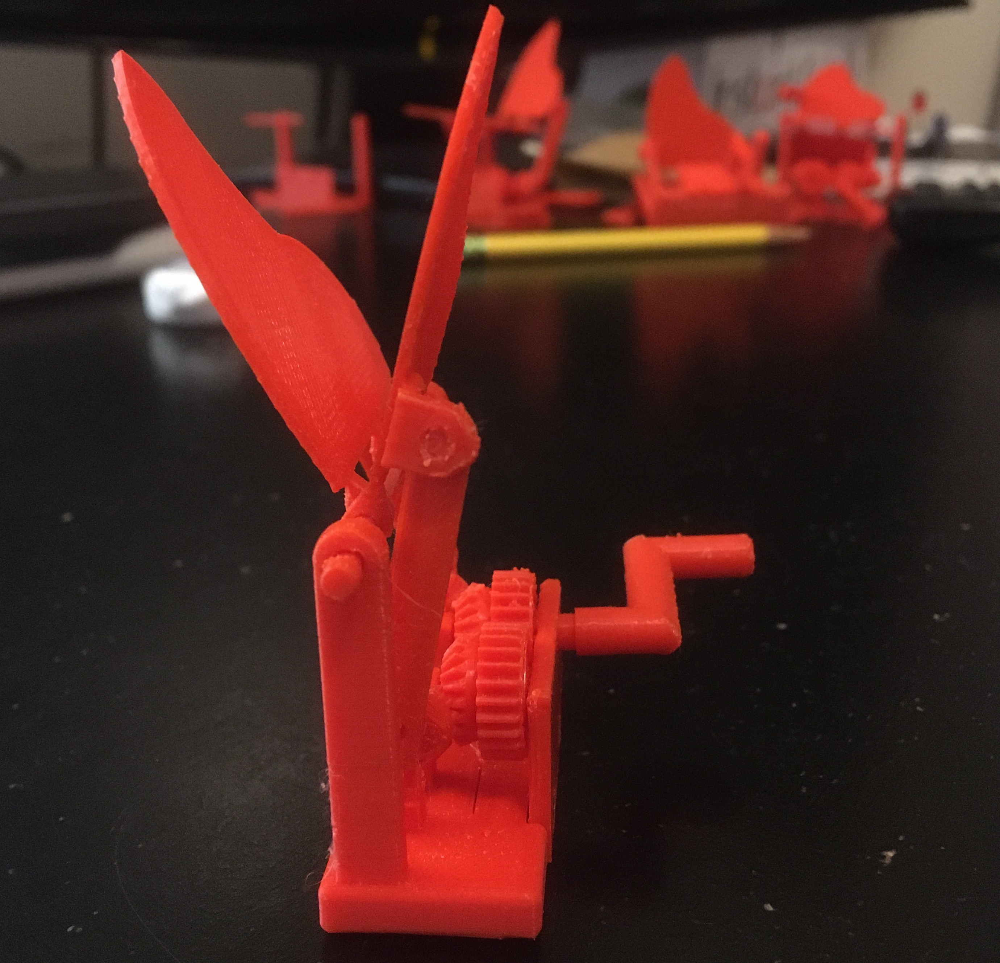

Introduction
After producing my first automaton with Geb the goose, I was inspired to learn more about automaton design and make more. The next one I decided to tackle was making a flapping butterfly. Unlike the relatively simple output of the mechanism on the goose automaton which just rotated the goose back and forth, the flapping butterfly required a mechanism that raised and lowered two wings at certain design specified angles. In addition to the regular spur gears used in the goose automaton, miter gears (a type of bevel gear with 45 degree cone angle) and a four bar linkage were used in this design. It was made as a gift for my best friend.

Butterfly Automaton
Four Bar Linkage Design
Linkage systems are often used to convert rotational motion into other cyclic motions which may include rotation and translation, so it seemed like the most straightforward solution for making the wings flap given the user input was spinning a crank. Usually this linkage system consists of four bars/links each filling a specific purpose. In my system, I wanted the wings to transition between being laid out flat and raised upwards 70 degrees. I also had specific requirements on the wingspan of the butterfly and its height above the base that supported it. The figure below depicts what this four bar linkage looks like for one wing on the butterfly automaton.

Four Bar Linkage Setup
The design requirements set by the desired wing angles, wingspan, and butterfly height then mathematically informed the link lengths that would be required for the crank and coupler links using the Law of Cosines for the triangles formed between the links in the two phases of the flapping motion. Although it looks like there are only two links in the final design, the full system including the butterfly wing and supporting base can be considered a four bar linkage.

Four Bar Linkage Calculation (Equations Solved in Mathematica)
Looking at the calculation above, it was determined that the crank should have a length of 3.81479 mm and the coupler should have a length of 26.5304 mm. Since the 3D printer I was using was only capable of up to about 0.1 mm of precision, these results were rounded to 3.8 mm and 26.5 mm. With this introduced error, the true change in wing angle was likely not exactly 70 degrees. Nonetheless, the error in the true change in wing angle was acceptable as that design requirement was set only so that the wings appeared to have been fully raised.
Gear Mechanism Design
With my first prototype I was trying to keep the design simple and imagined that it might be possible to rotate the cranks in the four bar linkage using one central shaft. After making a quick model in Solidworks, I realized this simple concept would not suceed. First, the links intersected the central shaft as they rotated which would not be physically possible. Second, using the one central shaft rotated both cranks controlling the wing angle in the same direction, offsetting the coordination of the flapping movements. In order to synchronize the flapping movement of the two wings, the cranks would need to be rotated in different directions.
First Prototype Using Central Shaft
To address these issues, I decided to actuate the cranks at either end of the base each with their own gear so the links could move freely and the cranks could rotate in opposite directions.
Second Prototype Using Gears at Ends
This was what I wanted! Now the challenge just became how to actuate those two gears at either end with a gear train that ensured the two gears would move in opposite directions using one central drive gear connected to a crank that could be rotated by the user.
One solution would have been to use a long shaft with spur gears attached along its length, but instead I opted to use miter gears on the cranks and a complementary set driving those on the cranks. This compressed the design by allowing the cranks to be driven by gears perpendicular to the crank gear. Then by compounding each of the two driving miters gears with meshing spur gears, the cranks could be driven simultaneously and in opposite directions.
Challenges During Prototyping
Many prototypes were made along the way to improve the design such that it could function basically as I had imagined it too. For each failed prototype, I examined it, took some notes on what features should be improved, pondered its failure for a little bit, and then designed a new prototype.
Prototypes
One of the major issues I encountered was how to ensure the gears maintained good contact when interacting with one another. Unlike the spur gears which only experienced radial and tangential loading during meshing, meshing bevel gears also experience axial loads which can push them out of contact with one another if they are not well secured. During early prototypes I was sliding the bevel gears onto shafts to put them in place which led to them quickly disengaging as the gears interacted. To address this issue on later prototypes, I slid the bevel gears onto shafts and then assembled the base around the bevel gears with screws to secure the bevel gears. In the below video it can be seen as the bevel-spur compound gears rotate, the adjacent bevel gears aren't always rotating since they keep losing contact with the bevel-spur compound gears.
Gears Losing Contact due to Axial Loading
Another one of the key issues I dealt with was material failure of the 3D printed parts. All the parts were 3D printed with PLA+ (PLA but with ambiguously better material properties). Unlike other 3D printing materials, like ABS or carbon fiber, PLA seems relatively easy to work with and cheap but lacks in material performance. It is interesting to note that the below captured part failures occurred at locations with a rapid change in diameter where a stress concentration would be expected. Since I was stuck working with PLA, I beefed up locations where failure occurred, by increasing infill density or cross-sectional area, such that the design could survive most finger-generated loads.

Failure Likely Due to Shear Stress Under Torsion

Failure Likely Due to Normal Stress Under Bending
Final Prototype
After the completion of many failed prototypes, I finally had a product that acted as I had first imagined. By no means was it a perfected product. The bevel gears still occasionally fell out of contact with one another, breaking the synchronization of the wing movements, and the friction in the system was significant. But it was functional just in time for my best friend's birthday which is what mattered!
Final Prototype Design and Demonstration